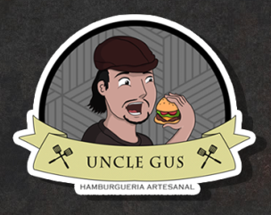

Gustavo

Vida <
-
Infância - sempre apaixonado pelo conhecimento me encantava pelo funcionamento de todas as coisas, amava desmontar e remontar brinquedos, eletrodomésticos, e todo tipo de aparelhos.
-
Adolescência teve uma época rebelde mas a paixão pelo conhecimento nunca foi esquecida no terceiro ano fui monitor geral dos projetos da escola do futuro da USP dos quais nossos projetos foram aceitos na SBPC Jovem (Sociedade Brasileira para o Progresso da Ciência) graças aos meus esforços em entregas de relatórios e desenvolvimento dos projetos, a diretora não queria que eu fosse porque era um dos piores alunos na época, mas todos os alunos bateram o pé de que só tinhamos sido aprovados por minha causa, então a contragosto fui para Alagoas onde apresentei nossos projetos e fomos entrevistados pelos jornais locais ganhando até mennções sobre todos os nossos esforços.
-
Fase adulta é a mais atribulada, cheia de altos e baixos, fiz várias faculdades, fisioterapia, ads, engenharia química, engenharia da computação o conhecimento sempre foi um mundo que me comoveu e o sentimento continua da mesma maneira, sempre buscando aprender algo.
Carreira

-
O primeiro contato com a profissão foi desde muito cedo, quando quis entender como
os jogos eram criados meu tio me ensinou sobre lógica de programação desde muito
cedo
nem havia aprendido a escrever, mas já sabia resolver exercícios de lógica.
-
Já na fase da adolescência trabalhei em uma empresa de montagem, manutenção e
configuração
de micros e redes, por lá aprendi a mexer tanto nas redes quanto me desenvolvi
aprendendo sobre
o hardware, com profissionais que me fizeram ficar encantados com o tanto tudo que
existe para
aprender.
-
Na fase adulta o caminho se bifurcou de algumas maneiras, por dificuldades de me
manter
na área por pouca experiência eu busquei outras alternativas, saúde, alimentação,
onde eu sempre
gostei de aprender e mexer.
Passatempo
O primeiro contato com a profissão foi desde muito cedo, quando quis entender como os jogos eram criados meu tio me ensinou sobre lógica de programação desde muito cedo nem havia aprendido a escrever, mas já sabia resolver exercícios de lógica.
Já na fase da adolescência trabalhei em uma empresa de montagem, manutenção e configuração de micros e redes, por lá aprendi a mexer tanto nas redes quanto me desenvolvi aprendendo sobre o hardware, com profissionais que me fizeram ficar encantados com o tanto tudo que existe para aprender.
Na fase adulta o caminho se bifurcou de algumas maneiras, por dificuldades de me manter na área por pouca experiência eu busquei outras alternativas, saúde, alimentação, onde eu sempre gostei de aprender e mexer.
Desde os 4 anos pratiquei kung-fu, nas artes marciais encontrei o equilíbrio do corpo e mente, pratiquei até os 23 anos, depois houve algumas complicações, mas seguimos sempre firme e forte.
prática desde a infância foi a cozinha, é uma arte maravilhosa, ajuda a passar o tempo desenvolve habilidades e a coordenação, uma das melhores áreas do planeta.
® E agora meu melhor tem sido o retorno a informática com tantas coisas novas, o aprendizado tem sido revigorante e incentiva cada dia mais seguir aprendendo.